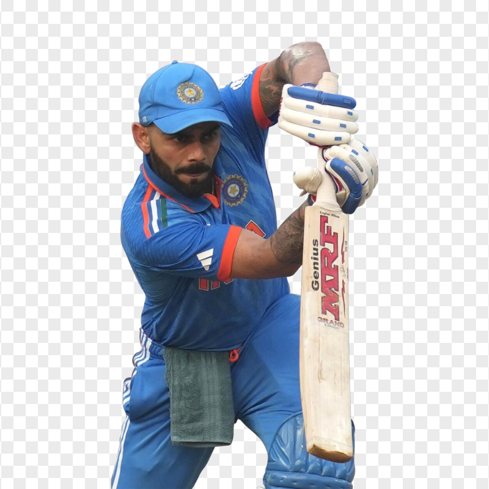
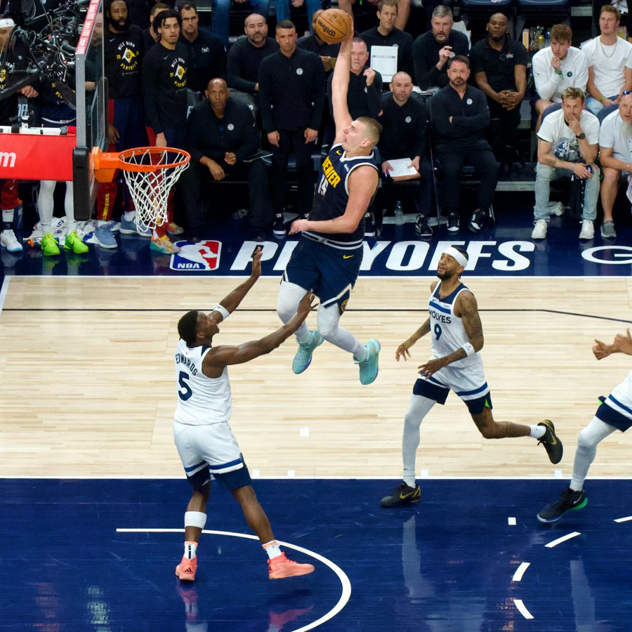

Cricket is one of the most popular sports in the world, especially in countries like India, Australia, England, and South Africa. It is played between two teams of eleven players each, using a bat and ball on a large oval-shaped field. The main objective is to score more runs than the opposing team. Cricket is governed internationally by the International Cricket Council (ICC), which organizes major tournaments like the Cricket World Cup and T20 World Cup. There are three main formats of cricket: Test matches, One Day Internationals (ODIs), and Twenty20 (T20). Test cricket is the longest format, lasting up to five days, and is considered the most traditional and challenging. ODIs are limited to 50 overs per side, while T20 matches are fast-paced, with only 20 overs per team, making them very exciting and popular among fans. Leagues like the Indian Premier League (IPL) have further increased the sport’s global appeal. Cricket has produced many legendary players, including Sachin Tendulkar, Virat Kohli, and Don Bradman. The sport requires a mix of skills such as batting, bowling, and fielding, along with strategy and teamwork. Over time, cricket has evolved with new technologies like Decision Review System (DRS) and advanced analytics, making the game more fair and engaging for both players and spectators.
Football, also known as soccer in some countries, is the most popular sport in the world. It is played between two teams of eleven players each, with the main objective of scoring goals by getting the ball into the opponent’s net. The sport is governed internationally by FIFA, which organizes major tournaments like the FIFA World Cup. Football is loved for its simplicity, requiring only a ball and open space to play. The game is played on a rectangular field with a goal at each end, and players use their feet, head, and body to control and pass the ball, except for the goalkeeper who can use hands within the penalty area. Matches are usually 90 minutes long, divided into two halves. Popular leagues such as the English Premier League and Spain’s La Liga attract millions of viewers worldwide and feature some of the best clubs and players. Football has produced legendary players like Lionel Messi, Cristiano Ronaldo, and Pelé. The sport emphasizes teamwork, skill, speed, and strategy. With passionate fans, iconic stadiums, and global competitions, football continues to unite people across cultures and remains a powerful part of sports history.

Basketball is a fast-paced and exciting sport played between two teams of five players each. The main objective is to score points by shooting the ball through the opponent’s hoop, which is positioned 10 feet above the ground. The sport was invented in 1891 by James Naismith and has since grown into one of the most popular sports worldwide. It is governed internationally by FIBA, which organizes major global competitions. A standard basketball game is played on a rectangular court with two hoops at opposite ends. Teams score two or three points for field goals depending on the distance, and one point for free throws. The game is typically divided into four quarters, and players must dribble the ball while moving. Popular leagues like the National Basketball Association (NBA) showcase top talent and attract millions of fans around the world. Basketball has produced legendary players such as Michael Jordan, LeBron James, and Kobe Bryant. The sport requires a combination of athleticism, teamwork, strategy, and quick decision-making. With its high energy and global appeal, basketball continues to inspire players and fans across different countries and cultures.